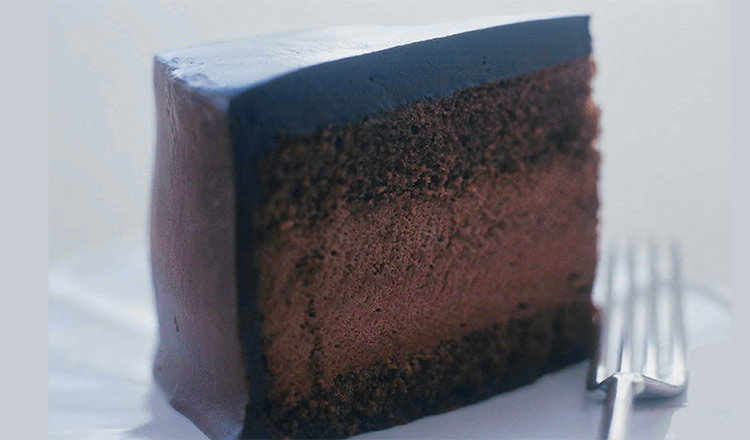

Let’s Make...
Chocolate Sabayon Torte! 🍫

Ingredients:
Simple Syrup
- 1/2 cup water
- 1/2 cup sugar
Torte
- One 8-inch chocolate sponge cake layer, sliced in half horizontally
- 1 recipe chocolate sabayon
- 1 recipe soft chocolate ganache
Directions:
- Boil the water and sugar in a saucepan over medium heat. Remove from the heat and cool the syrup to room temperature.
- Line a 7- to 8-inch cake ring or springform pan with plastic wrap (set a ring on a baking sheet). Trim one cake layer to fit, place it in the pan, and brush it with about 1/4 cup of the syrup.
- Make the chocolate sabayon, then immediately pour it over the cake and spread it evenly with a small offset spatula.
- Trim the second cake layer to fit, set it on top, and press gently to level it and release air pockets.
- Brush with the remaining syrup, cover tightly, and refrigerate for at least 3 hours or overnight.
- Invert the pan onto a cake plate and remove the ring and plastic wrap.
- Whip the ganache with the whisk attachment on high speed for about 5 minutes, until spreadable. Brush off loose crumbs, apply a thin crumb coat, and refrigerate for about 1 hour.
- Cover the top and sides with most of the ganache. If you like, decorate the sides with a cake comb and pipe the remaining ganache around the rim. Wrap and refrigerate until serving.
"...the sabayon filling must be made just before you pour it into the mold..."
Tortes take planning. The cake layers, simple syrup, and ganache can all be made ahead, so save the sabayon for last, or the gelatin may set too soon.
Recipe from The Culinary Institute of America.